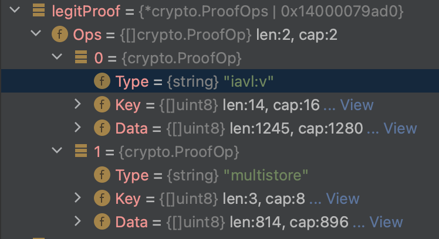
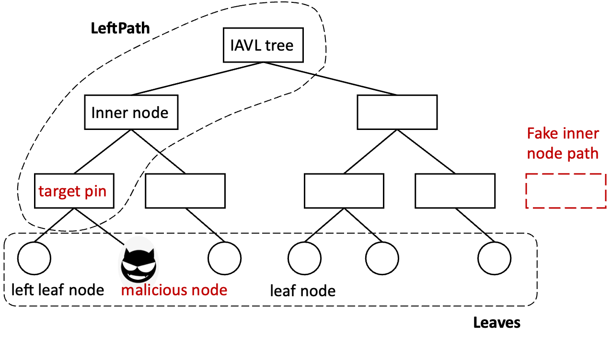

Attacks on BSC chain : How did this happen and the view of its potential affects.
Authors: | Tofu | CyberPigeon| Beihai |made @BHBA_DAO
Attacks on BSC chain : How did this happen and the view of its potential affects.1. Background2. How this attack happens ?2.1 Overview2.2 Attack details2.2.1 Verify proof on solidity2.2.2 Precompile contract for validate IAVL tree2.2.3 Where Things Become wired3. Potential affects of the library flaw3.1 Potential attacks on Cosmos3.1.1 IBC protocol3.1.2 Cosmos-SDK3.2 Potential attacks on project bridged with Cosmos3.2.1 Gravity bridge3.2.2 EVMOS3.3 Conclusion4. Who We are
1. Background
In Binance Ecosystem there are two chains. One is called BNB chain, which is a EVM competable chain ( Forked from Geth ) . And another one is Binance Chain ( Built on cosmos sdk) . And there is a "Bridge" between Binance Chain and BNB chain, which is attacked lately. In this write up we will analyze how the attack is committed , and more we will evaluate the effect of this attack.
2. How this attack happens ?
Based on samczsun's analysis, we will go through details of the BSC Cross Chain attack initiated on Oct. 7th, 2022.
2.1 Overview
First, we review the process of how the BSC Cross-Chain Contract works.
- A relayer sends a transaction to BSC Cross-Chain Contract to call
handlePackagefunction withpayloadandproof; - The Cross-Chain Contract verifies the validity of the
payloadbased on the Merkle proofproof; - If the
payloadis valid, the Cross-Chain Contract decodes thepayloadtomsgBytesand sends it to the TokenHub Contract to handle the message; - After TokenHub Contract executing the
msgBytes, thereceiverwill receive the amount of $BNB specified in themsgBytesfrom a full-zero address.
In the attack, the attacker sent an invalid payload with a forged proof which passed the verification of Merkle proof in step 2, taking 2 million $BNB from the TokenHub Contract. To be specific, in the forged proof , a mallicious leafNode is added to the IAVL tree rangeProof without changing the result of its hash root computation. The IAVL tree is a new data structure designed by Cosmos team that combines the benifits of Merkle tree and AVL tree. The existence proof of an IAVL tree leaf node is similar to the process of the Merkle proof.
2.2 Attack details
2.2.1 Verify proof on solidity
How did this attack happen？Let's go thourgh the call logics of the Cross-Chain Contract first.
(1) In contracts/CrossChain.sol, the MerkleProof.validateMerkleProof is called
xxxxxxxxxxfunction handlePackage(bytes calldata payload, bytes calldata proof, uint64 height, uint64 packageSequence, uint8 channelId) onlyInit onlyRelayer sequenceInOrder(packageSequence, channelId) blockSynced(height) channelSupported(channelId) external {
// -- snip --
require( MerkleProof.validateMerkleProof( ILightClient(LIGHT_CLIENT_ADDR).getAppHash(height), STORE_NAME, generateKey(packageSequence, channelId), payloadLocal, proofLocal ), "invalid merkle proof" ); // -- snip --
}
（2）In contracts/MerkleProof.sol, the function validateMerkleProof first assembles all the inputs above into bytes and calls the pre-compiled contract 0x65 of bnb-chain.
xxxxxxxxxxfunction validateMerkleProof(bytes32 appHash, string memory storeName, bytes memory key, bytes memory value, bytes memory proof) internal view returns (bool) { if (appHash == bytes32(0)) { return false; }
// | storeName | key length | key | value length | value | appHash | proof | // | 32 bytes | 32 bytes | | 32 bytes | | 32 bytes | | bytes memory input = new bytes(128+key.length+value.length+proof.length);
// -- snip --
uint256[1] memory result; /* solium-disable-next-line */ assembly { if iszero(staticcall(not(0), 0x65, input, length, result, 0x20)) {} }
return result[0] == 0x01; }}
(3) In pre-compiled contract, the func (c *iavlMerkleProofValidate) Run(input []byte) is triggered. The input bytes of step (2) are unmarshalled into kvmp. Then, kvmp.Validate() is called
xxxxxxxxxx// input:// | payload length | payload |// | 32 bytes | |func (c *iavlMerkleProofValidate) Run(input []byte) (result []byte, err error) { defer func() { if r := recover(); r != nil { err = fmt.Errorf("internal error: %v\n", r) } }()
// -- snip --
kvmp, err := lightclient.DecodeKeyValueMerkleProof(input[precompileContractInputMetaDataLength:]) if err != nil { return nil, err }
valid := kvmp.Validate() if !valid { return nil, fmt.Errorf("invalid merkle proof") }
result = make([]byte, merkleProofValidateResultLength) binary.BigEndian.PutUint64(result[merkleProofValidateResultLength-uint64TypeLength:], 0x01) return result, nil}Notice: the data structure of kvmp is defined as
xxxxxxxxxxkvmp := &KeyValueMerkleProof{ Key: key, Value: value, StoreName: storeName, AppHash: appHash, Proof: &merkleProof,}2.2.2 Precompile contract for validate IAVL tree
(4) In github.com/bnb-chain/bsc/core/vm/lightclient/types.go, the func (kvmp *KeyValueMerkleProof) Validate()
- first goes to
err := prt.VerifyValue(kvmp.Proof, kvmp.AppHash, kp.String(), kvmp.Value). - then goes to
prt.Verify(proof, root, keypath, [][]byte{value}) - and then goes to
`poz.Verify(root, keypath, args) - finally goes to
args, err = op.Run(args)
From step 1 on, the bsc project utilizes the library of tendermint.
xxxxxxxxxxfunc (kvmp *KeyValueMerkleProof) Validate() bool { prt := DefaultProofRuntime()
//-- snip --
err := prt.VerifyValue(kvmp.Proof, kvmp.AppHash, kp.String(), kvmp.Value) return err == nil}
func (prt *ProofRuntime) VerifyValue(proof *tmcrypto.ProofOps, root []byte, keypath string, value []byte) (err error) { return prt.Verify(proof, root, keypath, [][]byte{value})}
func (prt *ProofRuntime) Verify(proof *tmcrypto.ProofOps, root []byte, keypath string, args [][]byte) (err error) { poz, err := prt.DecodeProof(proof) if err != nil { return fmt.Errorf("decoding proof: %w", err) } return poz.Verify(root, keypath, args)}
func (poz ProofOperators) Verify(root []byte, keypath string, args [][]byte) (err error) { // -- snip --
for i, op := range poz { // -- snip -- args, err = op.Run(args) if err != nil { return } } if !bytes.Equal(root, args[0]) { return cmn.NewError("Calculated root hash is invalid: expected %+v but got %+v", root, args[0]) } // -- snip -- return nil}
(5) The opz in step (4) is decoded by poz, err := prt.DecodeProof(proof) in func (prt *ProofRuntime) Verify as follow:

Notice: The Ops specify the ways to calculate the Merkle root of IAVL tree and are pre-registered by func DefaultProofRuntime() (prt *merkle.ProofRuntime) in github.com/bnb-chain/bsc/core/vm/lightclient/multistoreproof.go
(6) As shown in the figure above, it will first goes to func (op IAVLValueOp) Run
xxxxxxxxxxfunc (op IAVLValueOp) Run(args [][]byte) ([][]byte, error) { if len(args) != 1 { return nil, cmn.NewError("Value size is not 1") } value := args[0]
// Compute the root hash and assume it is valid. // The caller checks the ultimate root later. root := op.Proof.ComputeRootHash() err := op.Proof.Verify(root) if err != nil { return nil, cmn.ErrorWrap(err, "computing root hash") } // XXX What is the encoding for keys? // We should decode the key depending on whether it's a string or hex, // maybe based on quotes and 0x prefix? err = op.Proof.VerifyItem([]byte(op.key), value) if err != nil { return nil, cmn.ErrorWrap(err, "verifying value") } return [][]byte{root}, nil}In order to pass the verification of MerkleProof.validateMerkleProof in step (1), two requirements should be satisfied
- Firstly, the
return [][]byte{root}, nilfromfunc (op IAVLValueOp) Runin step (5) should match theargs[0]of!bytes.Equal(root, args[0])fromfunc (poz ProofOperators) Verifyin step (4) - Secondly, the error of
err := op.Proof.Verify(root)anderr = op.Proof.VerifyItem([]byte(op.key), value)should be nil
(7) To satisfy the above requirements, the root caculated by op.Proof.ComputeRootHash() in func (op IAVLValueOp) Run should be unforgeable. The op.Proof.ComputeRootHash() first
- goes to
func (proof *RangeProof) ComputeRootHash() - then goes to
func (proof *RangeProof) _computeRootHash() - and then goes to the closure
func(path PathToLeaf, rightmost bool)of_computeRootHash() - finally goes to
hash = (pathWithLeaf{Path: path, Leaf: nleaf,}).computeRootHash()
xxxxxxxxxxfunc (proof *RangeProof) ComputeRootHash() []byte { if proof == nil { return nil } rootHash, _ := proof.computeRootHash() return rootHash}
func (proof *RangeProof) _computeRootHash() (rootHash []byte, treeEnd bool, err error) { if len(proof.Leaves) == 0 { return nil, false, cmn.ErrorWrap(ErrInvalidProof, "no leaves") } if len(proof.InnerNodes)+1 != len(proof.Leaves) { return nil, false, cmn.ErrorWrap(ErrInvalidProof, "InnerNodes vs Leaves length mismatch, leaves should be 1 more.") }
// Start from the left path and prove each leaf.
// shared across recursive calls var leaves = proof.Leaves var innersq = proof.InnerNodes var COMPUTEHASH func(path PathToLeaf, rightmost bool) (hash []byte, treeEnd bool, done bool, err error)
// rightmost: is the root a rightmost child of the tree? // treeEnd: true iff the last leaf is the last item of the tree. // Returns the (possibly intermediate, possibly root) hash. COMPUTEHASH = func(path PathToLeaf, rightmost bool) (hash []byte, treeEnd bool, done bool, err error) {
// Pop next leaf. nleaf, rleaves := leaves[0], leaves[1:] leaves = rleaves
// Compute hash. hash = (pathWithLeaf{ Path: path, Leaf: nleaf, }).computeRootHash()
// -- snip --
// We're not done yet (leaves left over). No error, not done either. // Technically if rightmost, we know there's an error "left over leaves // -- malformed proof", but we return that at the top level, below. return hash, false, false, nil }
// Verify! path := proof.LeftPath rootHash, treeEnd, done, err := COMPUTEHASH(path, true) if err != nil { return nil, treeEnd, cmn.ErrorWrap(err, "root COMPUTEHASH call") } else if !done { return nil, treeEnd, cmn.ErrorWrap(ErrInvalidProof, "left over leaves -- malformed proof") }
// Ok! return rootHash, treeEnd, nil}
(8) As we can see, the root is only calculated by func (pwl pathWithLeaf) computeRootHash() through hashing the concatenation of IAVL tree left leaf node and its path .
xxxxxxxxxx// `computeRootHash` computes the root hash with leaf node.// Does not verify the root hash.func (pwl pathWithLeaf) computeRootHash() []byte { leafHash := pwl.Leaf.Hash() return pwl.Path.computeRootHash(leafHash)}For ease of understanding, we give out a naive illustration of the Merkle root calculation in IAVLValueOp. Also, you could go through samczsun's code.

Notice: the RangeProof struct used for Merkle root calculation is defined as followed
xxxxxxxxxxtype RangeProof struct {// You don't need the right path because// it can be derived from what we have.LeftPath PathToLeaf `json:"left_path"`InnerNodes []PathToLeaf `json:"inner_nodes"`Leaves []proofLeafNode `json:"leaves"`// memoizerootVerified boolrootHash []byte // valid iff rootVerified is truetreeEnd bool // valid iff rootVerified is true}
Thus, there should be something wrong with the leave node or inner node path computations.
2.2.3 Where Things Become wired
(9) As a result, in github.com/tendermint/iavl@v0.12.0/proof_path.go, we found that the hash of inner node path is calculated in a wrong way.
Notice: Although the version utilized is v0.12.0, the problem still exists in the latest version at the moment of writing. However, the issue#579 is already noticed by the tendermint team.
xxxxxxxxxxfunc (pin proofInnerNode) Hash(childHash []byte) []byte { hasher := tmhash.New() buf := new(bytes.Buffer)
// -- snip -- // Where the bug is located if len(pin.Left) == 0 { if err == nil { err = amino.EncodeByteSlice(buf, childHash) } if err == nil { err = amino.EncodeByteSlice(buf, pin.Right) } } else { if err == nil { err = amino.EncodeByteSlice(buf, pin.Left) } if err == nil { err = amino.EncodeByteSlice(buf, childHash) } } // -- snip -- hasher.Write(buf.Bytes()) return hasher.Sum(nil)}
Based on the func (pin proofInnerNode) Hash(childHash []byte) above, the len(pin.Left) of target pin is not 0, then the code goes into else branch. As we can see, the pin.Right is not counted into the buf in the else branch. Therefore, although a malicious node is added to the IAVL tree, the hash of the IAVL tree remains unchanged.
3. Potential affects of the library flaw
Usually, attacks on bridges are committed due to the flaw of contract codes or misconfig during the bridge upgrade. However, this time the attack is built on the incorrect implementation of the base library.
As a result, many of the projects that utilized the flawed library github.com/cosmos/iavl including cosmos-sdk, the core component of the cosmos ecosystem, and the IBC protocol may be affected. We categorized the potential affected projected into two categories: projects built with cosmos-sdk and projects bridged with cosmos.
3.1 Potential attacks on Cosmos
3.1.1 IBC protocol
The IBC protocol is the standard of cross-chaining between Cosmos ecosystems. The IBC protocol utilize a vector commitment to verify the valid executions of transactions on the source chain while cross-chaining. The IBC protocol specifies that the vector proofs which include proofs of IAVL trees can be used via ics23. Therefore we need to check whether the buggy implementation of github.com/cosmos/iavl is introduced into the implementation of ics23.
The implementation of ics23 which includes ics-23-go and confio/ics23 does not utilize the IAVL library. Thus, it will be not be affected.
3.1.2 Cosmos-SDK
Cosmos-SDK and Cosmos light client use IAVL+ tree to store states and proof existence or nonexistence of states respectively. Although Cosmos-SDK provides a handy tool to convert IAVL tree proof to ics23 proof, there is no evidence that the it uses IAVL proof directly. Thus, Cosmos-SDK is not under the impact.
3.2 Potential attacks on project bridged with Cosmos
3.2.1 Gravity bridge
Gravity bridge uses multisig to bridge messages between Ethereum and Cosmos which does not rely on vector commitments.
3.2.2 EVMOS
EVMOS is a EVM compatible chain which bridges ETH to the EVMOS ecosystem. However, the bridge verifies the proof of messages based on ics23 and thus will not be affected.
3.3 Conclusion
We do not found any further potential attacks on the flaw library currently. However, projects which use github.com/cosmos/iavl directly (not ics23 ) for message verifications are still vulnerable. BE Careful !
4. Who We are
BHBA_DAO is a decentralized and autonomous student organization formed by Beihang students. Our vision is to provide a platform for blockchain enthusiasts to learn and share innovation ideas. We will help university students to learn blockchain technology and master blockchain development skills through activities such as meet-ups, industry researches, and development activities like Hackathon. All university students are welcome to join us, and welcome to follow our Twitter @BHBA_DAO for latest progress.